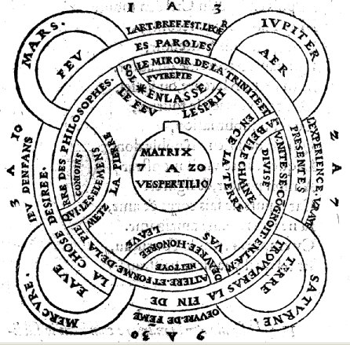

LA CHRYSOPEE DU SEIGNEUR
attribuée à Raymond Lulle
revu, le 30 juin 2002
Introduction Ce petit traité envisage l'alchimie uniquement sous ses principes élémentaires et les met en parallèle avec des « qualités théogonales » dont l'étude se révèle du plus haut intérêt envisagée sous la perspective hermétique. La Chrysopée du Seigneur se révèle en ce sens comme un véritable carrefour entre l'hermétisme, le christianisme et l'alchimie à proprement parler. Comme tel, il y a lieu de revenir ici sur les points de doctrine hermétique les plus fondamentaux. Nous avons extrait le passage que l'on lira ci-après, de l'Histoire de la Littérature Grecque, par Emile Burnouf [Delagrave, 1869].
La littérature hermétique nous jette dans un tout autre monde. Qu'est-ce que Hermès trois-fois-très-
grand, ErmhV trismegistoV, auquel ces livres sont attribués ? Nul ne le sait. Le nom de ce dieu était, depuis le temps d'Alexandre, employé par les Grecs comme équivalent de celui de Krishna; si c'est ici le cas, l'épithète de Trismégiste s'expliquerait d'elle-même, et l'on aurait en même temps l'explication de ce fait que beaucoup d'expressions, de formules et même de phrases des écrits hermétiques se trouvent intégralement dans le Chant-du-Bienheureux (la Bagavad-gîtâ) et ne se rencontrent nulle part ailleurs. Il suffirait qu'un tel livre fut tombé au milieu de la société grecque, soit en Egypte soit ailleurs, pour rendre compte de presque toute la littérature hermétique ; à sa suite viendrait également se placer un livre qui a joui, ainsi que ceux d'Hermès, d'une grande autorité pendant les premiers siècles de l'Eglise, le Pasteur d'Hermas; car Krishna est aussi le Pasteur, Varshnéya; et la Bagavad-gîtâ a pour interlocuteur Krishna. Il n'est pas douteux que la plupart des livres hermétiques, sinon tous, ont été faits en Egypte dans les premiers temps de l'ère chrétienne. Le judaïsme ne s'y montre presque jamais; l'hellénisme a fourni quelques idées et quelques noms; un seul morceau, la Korh kosmou, a une couleur tout à fait égyptienne et, quant aux doctrines, est fort inférieur à tous les autres. Mais des noms, des faits et des allusions assez fréquentes montrent que les auteurs écrivaient sur le sol égyptien. — Quels étaient-ils ? Rien ne le fait connaître. Le retour perpétuel d'Asclépios, comme interlocuteur principal, semble seulement indiquer que ces écrits ont procédé de la secte des Thérapeutes. Cette secte, primitivement juive peut-être et affiliée aux
Esséniens, se composait probablement alors d'hommes de plusieurs nations, mais surtout d'Hellènes. — Quant au nom de Tat, est-il égyptien, ou bien est-ce le Tat de la célèbre formule indienne Aum, Tat, Sat (Voy. la Bagarad-gîtâ), ou enfin le Tathâgala des bouddhistes ? C'est ce qu'on ne peut
aisément décider; mais rien n'indique que ce soit le Tôth des hiéroglyphes. Les livres hermétiques passaient pour renfermer vingt mille vers : ils ne nous sont malheureusement parvenus qu'en fragments et quelquefois même dans une traduction latine. Tels qu'ils sont, ils exposent une doctrine parfaitement nette, dont nous avons vu les éléments apparaître dans le monde grec dès l'époque des guerres médiques, se développer de siècle en siècle, se revêtir de formules presque religieuses dans les poésies orphiques et pythagoriciennes, et gagner du terrain dans la littérature et dans la société. Cette doctrine est un panthéisme parfaitement pur, tel qu'il est dans le poème sanscrit cité plus
haut.« De qui les vivants reçoivent-ils la vie fit les immortels l'immortalité ? Qui produit, les transformations ? Que ce soit matière, corps ou essence, sache que ce sont là des énergies (çakityas) de Dieu;... tout cet ensemble est Dieu; et, dans l'univers, il n'est rien qui ne soit Dieu. Ainsi il n'y a ni grandeur, ni rapport, ni qualité, ni forme, ni temps au delà de Dieu; car il est tout, il pénètre tout, il enveloppe tout. Adore cette parole et prosterne-toi, mon fils, et rends à Dieu le seul culte qui lui convienne, qui est de n'être pas mauvais. » Frag. XII.
Le morceau intitulé Poimandrès (Ce mot est formé contrairement aux usages de la langue grecque et constitue un barbarisme, si on lui donne le sens de pasteur des hommes [cf. infra sur le Grand Pasteur des Brebis] ou. à.l'homme pasteur; de plus il serait seul de cette espèce. Il paraît donc être un mot étranger, revêtu d'une apparence grecque. Si cela est, il peut répondre à un mot sanscrit formé de puns et de antara, signifiant le Principe masculin c'est-à-dire l'Esprit divin, contenu dans les êtres pensants et, identique à Purusha.) contient la théorie du feu, de la vie et de la pensée, sous la figure du Vase sacré contenant la liqueur du sacrifice. Cette même théorie se trouve plus expressément figurée de la même manière dans le morceau intitulé le Cratère, c'est-à-dire le Vase où se fait le mélange de l'eau et du vin. Car c'est un des caractères les plus remarquables de la littérature hermétique, caractère qui est celui de tous les livres sacrés de l'Inde, qu'elle présente les doctrines sous deux formes, à savoir en langage simple et par figures symboliques. Ce symbolisme, identique à celui des premiers chrétiens tel qu'il se voit dans les peintures des Catacombes, dans les rituels de l'Église et encore ailleurs, signale les auteurs de ces livres comme affiliés à une société secrète, qui ne voulait pas livrer ses dogmes à la curiosité, ni les laisser s'amoindrir dans la discussion. Les symboles les couvraient et les fixaient : c'est du reste ce qui est énoncé en ces termes dans le fragment onzième du Livre II (Ces chiffres renvoient à la traduction de M. L. Ménard, 1866.).
« Je te rends grâces, Dieu suprême, qui m'as illuminé des rayons de la divinité. Pour vous, ô Tat, Asclépios et Ammon, gardez ces divins mystères dans le secret de vos cœurs et couvrez-les de silence. »
C'est la recommandation que Krishna adresse à Arjouna, lorsqu'ils ont terminé leur entretien. Deux choses en effet méritent, surtout notre attention dans presque tous les livres hermétiques : l'identité des doctrines qu'il renferment avec celles de l'inde, et l'identité des symboles qu'ils proposent avec ceux des chrétiens. D'un autre côté ni le nom ni la théorie du Christ ne s'y rencontrent; ce ne sont pas des livres chrétiens; il ne semble même pas que leurs auteurs aient eu quelque idée du Christ; mais par la théorie du Verbe, qu'ils reproduisent a chaque instant, ils paraissent s'être assez rapprochés de la théorie chrétienne, pour qu'à l'époque de Constantin, Lactance, qui les regardait comme des livres déjà anciens, ait pu dire avec étonnement que « Hermès avait découvert presque toute la vérité; » seulement il ajoute « je ne sais comment », preuve que les livres avaient une origine mystérieuse et ne se rattachaient pas aux doctrines égyptiennes que tout le monde à cette époque pouvait encore connaître. Il semble que le doute soit levé pour nous, et que l'Inde doive être considérée comme le berceau de la littérature hermétique. Son influence fut très-grande sur la société nouvelle et se confondit avec celle des chrétiens proprement dits, jusqu'au jour où, par l'exagération de la doctrine panthéiste, les philosophes alexandrins poussèrent les docteurs de l'Eglise vers la doctrine opposée, qui a prévalu jusqu'à nos jours. Cette exagération ne se rencontre pas encore dans les livres d'Hermès : ils ont donc pu servir de point d'appui aux gnostiques de toute opinion. Il faut
seulement remarquer que la gnose, qui est « la connaissance de Dieu » n'apparaît pas ici pour la première fois et qu'elle est déjà dans Philon et même dans les poésies orphiques antérieures à la conquête romaine. Celte gnose, mot qui traduit exactement le mot sanscrit vêda, est la vidyâ que, depuis les anciens temps, les brahmanes n'ont pas cessé de révérer comme la source de la science, de la force morale et de la béatitude. On peut donc regarder les livres d'Hermès comme un des plus forts anneaux qui unissent l'Orient et l'Occident. Mais on voit aussi en les lisant que la pensée hellénique y a presque entièrement disparu et qu'elle s'est comme fondue dans une doctrine catholique, comme on disait alors, c'est-à-dire universelle :« Le langage est différent, dit Hermès ; mais l'homme est le même (les langues diflerent chez les hommes d'une nation à l'autre); mais le Verbe parlé est un, et, par la traduction, on voit qu'il est le même en Egypte, en Perse et en Grèce. » I, 12.
Cette doctrine universelle cheminait à cette époque avec une extrême énergie ; elle s'écrivait dans des livres grecs, latins, syriaques, araméens; elle se pratiquait secrètement ou ostensiblement chez les Esséniens, les Thérapeutes, les Chrétiens et dans les sociétés qui leur étaient affiliées dans tout l'empire; elle s'affirmait sous les pierres dont les Juifs lapidaient à Jérusalem le malheureux Etienne;
elle s'enseignait à l'Aréopage par la bouche de Paul; elle siégeait dans un grand nombre de villes du Levant, et venait fixer son centre principal dans Rome même à côté du trône des Césars. Le vieux monde s'enfuyait avec une rapidité merveilleuse ; l'hellénisme n'était déjà plus qu'à la surface des choses; le fond lui échappait; deux efforts encore et il allait disparaître pour toujours.
« La sagesse d'En-Haut est premièrement pure, ensuite, pacifique, modérée, conciliante, pleine de miséricorde et de bons fruits, exempte de duplicité, d'hypocrisie. Et le fruit de la justice est semé dans la paix, par ceux qui recherchent la Paix...» (Ep JACQUES. III-17, 18)[un cabaliste peut trouver là des enseignements hermétiques. Ainsi, quand saint Jacques dit que la « sagesse est pure, pacifique, conciliante », les alchimistes ne parlent pas autrement de l'essence de leur Mercure préparé et animé. Les « bons fruits » sont ceux qui attendent l'Artiste, lorsqu'après avoir vaincu le Dragon Ladon qui garde les pommes d'or du Jardin des Hespérides : notre Hercule, notre Cadmus pourra alors palper ces beaux fruits ou tater la la laine du mouton Chrysomelle - en grec, pomme et mouton se disent mhlon - Nommer la Justice, c'est dire dans quel signe du zodiaque se forme le Rebis, cf. zodiaque alchimique.]
L'observation des Hommes a noté ce point particulier de leur nature, et qui veut qu'en eux la Paresse soit la mère de tous les Vices. Ce qui s'explique par le fait que le refus de la Chair de participer aux exigences des oeuvres de l'Esprit tend invinciblement à générer en eux-mêmes les éléments contraires susceptibles de mieux servir ce honteux défaut. [la question posée est donc celle de l'inertie de la Chair, c'est-à-dire de l'absence de mouvement du CORPS, c'est-à-dire d'une substance solide ; en ce sens il n'est que logique de voir la chair ainsi indifférente aux vertus spirituelles]
Ainsi donc, on peut admettre que l'Ame envahie par un Vice quelconque (manifestation d'un Principe intelligent et conscient de sa perversité), se trouve aussitôt en butte aux autres vices, que le premier qui força la place appelle aussitôt à l'aide, afin de conserver le fort qu'il vient d'emporter. [contrairement à ce que Lulle semble poser en axiome - que l'âme est envahie par un vice - ne faut-il pas plutôt poser en principe que c'est l'âme elle-même qui génère le vice ? C'est ce que laisse à croire Jamblique. La chute de l'âme dépendrait d'une faute originelle, qu'il s'agisse d'une altérité première (opinion défendue par Plotin) ou démence et déviation (sentiment des Gnostiques où l'on peut presque dire que l'âme « perd l'esprit ». Il est intéressant de noter que cette chute serait alors conditionnée par la rupture d'un lien. De quelle essence serait donc cette liaison ? On peut supputer que l'ESPRIT de Dieu, omniprésent, façonne de multiples émanations qui sont en queque sorte des antennes par lesquelles il peut avoir une perception des mondes sub-firmamentaux. Et que ces émanations sont surtout caractérisées par leur extrême mobilité ou volatilité - on ne saurait mieux donner d'idée plus directe qu'en imaginant que l'ESPRIT de Dieu est comme le disque dur (DD) d'un PC qui envoit dans la RAM - mémoire vive - des octets en permanence avec un processus incessant d'échange. A la suite d'une circonstance particulière, ily aurait eu rupture de cette chaîne de correspondances ; cette rupture aurait eu comme conséquence que l'âme, ce pseudopode divin, ne reconnaitrait plus son lieu d'origine - si l'on continue l'analogie, les données situées en RAM ne pourraient pas être recopiées sur le DD. De là, la chute de l'âme. Mais si l'on a ainsi, par cet exemple très sommaire et très mécaniste, voulu donner une explication triviale de la déviation ou de la « démence » de l'âme, cela ne nous donne pas la cause première de cette perdition. Est-ce une fascination spéciale qui éveille un sentiment d'autonomie chez l'âme et qui la fixe, lui faisant perdre ainsi sa liaison ? Ou bien la cause de la rupture se situe-t-elle dans le pseudopode même ? Ou enfin, à l'origine, c'est-à-dire dans cet ESPRIT ? On a dit que les âmes « descendaient » pour achever l'univers (version du Timée) ou pour donner une représentation - sur la Terre - de la vie des dieux. Ou encore pour conserver les choses terrestres (mais un animal ou une pierre ont-ils une âme ? Ou, plus en conformité avec notre sujet, à la suite d'un jugement ? C'est ce qu'ont pensé Jamblique et Platon, dans le sens d'une purification liée à une punition, sans qu'il soit possible, d'ailleurs, d'en préciser le premier terme. C'est dans le Kore Kosmou que l'on trouve - c'est ce que dit Festugière dans sa somme sur Hermès - l'idée de cette faute originelle. Notons d'ailleurs que Platon, dans le Phédon, défend cette idée. Ce n'est pas la première fois que nous voyons les sectateurs d'Hermès se révéler de fins platoniciens...Festugière admet le péché de curiosité ; voilà qui rejoint la fascination que nous évoquions plus haut, qui génère un manque de mobilité - c'est Orphée qui surprend les bêtes sauvages par les sons de sa lyre - cette fascination exercée sur les âmes les met, de façon paradoxale, en harmonie avec les choses sub-lunaires et, de ce moment, il semble que s'organise une désobéissance passive aux ordres de Dieu. Mais il y a plus : le Kore Kosmou indique qu'une « mixture sacrée » aurait été fournie par Dieu aux âmes (comment ne pas y voir le nectar ou l'ambroisie des dieux grecs ?) et que ces âmes auraient chercher, par une hardiesse indiscrète - periergoV tolma - à en découvrir la texture ou la structure. ainsi, écrit Festugière :
« les âmes ont été curieuses à l'égard du mélange du Père et, comme nous l'avons vu, cette curiosité est une insolence. »
Si l'on essaye de transcrire mécaniquement cette curiosité alliée à cette insolence, on ne pourra en parler que comme une avidité, une attirance particulière. Seule l'âme élue, en ce sens, serait celle qui pourrait perdurer dans une attitude indifférente par rapport à cette perversion, autrement dit celle qui aurait le plus de fixité ? N'est-ce pas là une sélection naturelle, en quelque sorte, de la tête porteuse de l'Arbore Solari (arbre solaire) ? N'est-ce pas là, de même, cette tête immortelle de l'Hydre, qu'Hercule doit atteindre (comprenez cette âme métallique qui, seule, pourra le moment venu, « descendre » dans le Corps approprié)]
Mais si ce processus ne fait qu'exprimer en mode inversé, un processus naturel de génération des attributs de l'Ame, c'est que ce dernier existe bien par lui-même, et, conséquemment, que les Vertus de l'Ame sont susceptibles d'une manifestation et d'un développement harmoniques, leur épanouissement et leur permanence dépendant de leur totalité. Ainsi, de même qu'en l'édifice une pierre en appelle une autre, et qu'elles deux en exigent une troisième, ce jusqu'à la pose finale de la " clef ", de même une Vertu et un Vice sont générateurs d'autres Principes, ce jusqu'à concurrence de l'ensemble final.
C'est pourquoi, Fils du Soleil et de la Lune, [le fils de Gabricius et de Beja forme la pierre des philosophes] si le langage des Philosophes ne t'est pas absolument inintelligible, médite leur enseignement. Méprisant le honteux désir de l'Or, vu la vaine curiosité naturelle qui ne conclut pas parce que ne s'étant jamais par avance fixé sa route, tu sauras alors percer le secret des véritables Fils du Feu. Tu comprendras alors seulement que ce Feu n'est point le feu sombre et satanique, desséchant à la fois la chair et le coeur du faux sage ou de l'ignorant souffleur ; mais qu'au contraire, ce Feu est en réalité l'ESPRIT CONSOLATEUR que nous annoncent les saints Evangiles. [cet Esprit est le Mercure philosophique, le dissolvant des métaux]
Puisses-tu alors avoir la Force de mettre en pratique les vrais secrets de l'Art que je te donne cy, puisses-tu mener à bien I'Oeuvre de ta propre Rédemption et atteindre ainsi l'Illumination finale promise aux saints hommes de Dieu. [dans ce texte, Lulle prend le lecteur pour la matière même de l'oeuvre]
C' est là, Fils du Soleil et de la Lune ce que te souhaite de tout son coeur ton Frère en Notre-Seigneur Jésus-Christ, son saint Nom soit béni ! Amen. [par cabale, le fils du Soleil et de la Lune est le Rebis]
La Tradition de ceux qui nous précédèrent sur le chemin de la Sagesse, nous dit que toutes choses précèdent de Quatre Eléments, et que ces quatre Eléments sont à la base de tout. Ce sont respectivement la Terre, l'Eau, l'Air et le Feu. [sur les quatre éléments appliqués à l'alchimie, cf. Chevreul in Idée alchimique, II, III, IV et V. Cf. encore Livre Secret d'Artephius, Cristallogénie et Atalanta XLIV ]
De ces Quatre Eléments, l' Alchymiste sait tirer deux Principes respectivement mâle et femelle, et un troisième Principe, neutre. Ce sont là le Soufre des Philosophes, le Sel des Philosophes et le Mercure des Philosophes. Ainsi donc, par une Opération simple et salutaire, nous disent les Maîtres, les Quatre sont réduits à trois. [Artephius a dit dans sa Clef de la Plus grande Sapience que les quatre éléments étaient distingués comme un genre de nature particulier : le COMPOSE DU SIMPLE ; et que les trois principes de l'oeuvre s'appelaient, quant à eux, les COMPOSES DES COMPOSES. Le principe dit neutre est le Mercure.]
Mais Soufre, Mercure et Sel des Philosophes ne constituent qu'un aspect intermédiaire de l'évolution de nos Eléments. [c'est là le point capital, car ces principes, pour préparés qu'ils soient, ne sont pas encore philosophiques] De leur série, naissent une nouvelle, composée de deux Principes, supérieurs à tous les autres. Ce sont le Soufre des Sages, et le Mercure des Sages. [il s'agit du Compost philosophal qui englobe le Mercure et le Soufre rouge qui y est dissous. L'ensemble porte alors le nom de Ciel des Philoosphes et la lisière entre le Mercure et notre ciel physique se nomme firmament. Tout cela est manifestement issu du mythe exposé dans le Phédon de Platon] Voici donc en réalité nos deux suprêmes Arcanes de l'Art. Et c'est de leur copulation finale que naîtra enfin la Chrysopée. [ce qu'il est convenu d'appeler la pierre philosophale]
Cette tétractys était bien connue des élèves du sage Pythagore, et les saints hommes de Dieu, versés dans la connaissance et l'emploi de ses Saints Noms ne l'ignoraient pas non plus. Telle qu'elle, c'est là toute la clé de notre Archymie.
Dans l'Homme, les Eléments susceptibles de faire débuter l'oeuvre, sont les Quatre Vertus Cardinales, savoir : Force, Prudence, Tempérance et Justice. [ce sont les qualités reprises, selon Geber, pour faire l'oeuvre ; elles font l'objet d'une section inspirée des Gardes du Corps de François II, figurant dans les Demeures Philosophales de Fulcanelli]
Le Sage qui a su développer en son Ame ces Quatre Vertus est assuré, de par leur présence même, de voir se développer en lui, à leur tour, les trois Vertus Théologales, savoir : Foi, Espérance et Charité. [il faut comprendre que la FOI représente l'Âme, c'est-à-dire le principe SOUFRE ; que l'ESPERANCE est l'ESPRIT, c'est-à-dire le MERCURE ; qu'enfin la CHARITE représente le principe SEL, encore appelé CORPS.]
Ainsi, la pratique suivie et attentive des Vertus Cardinales, génère et suscite l'action des trois Vertus supérieures. A leur tour, lorsque nos trois Principes supérieurs sont définitivement acclimatés en nous, ils s'empressent d'éveiller d'autres présences, celles des Puissances de la dyade suprême : Intelligence et Sagesse. [marque du Mercure philosophique où l'ÂME est entrelacée à l'ESPRIT]
Et à leur tour, ces deux grâces divines en éveillent une autre en nous : celle qui ne saurait être exprimée par des mots et des images. En cette dernière est toute la Béatitude promise aux élus, par elle, nous participons, créatures, à la Vie Divine. [parabole sur l'incarnation de l'âme, cf. réincrudation]
Il serait vain de croire que la pratique d'une seule Vertu soit susceptible de générer les suivantes. De même que l'enfant naît du père et de la mère, de même que l'Esprit-Saint procède et du père et du Fils, de même une Vertu ne procède que de deux autres. Ainsi, sur l'Arbre de notre Connaissance. [il y a deux arbres : l'Arbre Solaire qui porte les sept Soufres et l'Arbre Lunaire. Nous ne détaillons pas ici les Vertus. Le lecteur est amené à se reporter à la section des Gardes du Corps ]
La première Vertu qu'il importe de développer en nous est celle de la Force. Car comment pouvons-nous nous attaquer à une telle entreprise si nous ne sommes pas, par avance, assurés de la mener à bien ? Il faut donc être fort ; fort contre le monde, fort contre nous, fort contre nos Vices. [la Force contracte donc des rapports avec tout ce qui a trait à la fixation ou à la résistance au feu : sel fixe, alakli fixe, sel incombustible, salamandre, etc.]
La seconde Vertu à développer est la Prudence, car elle nous enseignera à nous défier du Monde, de nous-mêmes, des ruses subtiles des Vices, nos Ennemis conscients et subtils. Car, encore une fois, il ne faut point voir ces Vices comme des réactions instinctives et mécaniques de notre propre Chair. Sans doute, celle-ci sert de véhicule et de canal à ces réactions. Mais celles-ci sont inspirées par l'Esprit Démoniaque qui habite en elle, puisqu'il en est à la fois l'auteur et l'animateur. [c'est souligner ici l'aspect dual de l'Âme et de remarquer que l'incarnation de l'âme correspond à l'envenimation du Monde, c'est-à-dire à l'accrétion des Soufres. Or, qu'est-ce que le Soufre rouge, si ce n'est un venin - ioV ?] C'est par elle que l'Esprit des Ténèbres s'exprime [référence à la grande éclipse de Soleil et de Lune, c'est-à-dire à la période de dissolution de la matière dans l'Hadès - remarquez que l'on peut l'écrire aidès, ce qui signifie « sans fin ». C'est aussi la marque du cercle, de l'anneau magique, du serpent Ouroboros de la Chrysopée de Cléopâtre] ; et lorsqu'il la fait vibrer à sa guise, ainsi que la viole sous les doigts du ménétrier, nous devons, en tant qu'esprit libre, nous défier de tout ce qu'elle apporte de suggestions diverses, compliments ou reproches, conseils ou négations, tout ce qui semble présenter une justification de la prééminence de la Chair sur l'Esprit, tout est à rejeter. Voici la Vertu de Prudence. [la Chair - le CORPS - est le premier des principes qui réapparaît après la période de dissolution. C'est pourquoi la mythologie nous dit que lorsque Latone accoucha à Délos, ce fut Diane qui parût d'abord et qui servit ainsi de parèdre à Latone, pour l'aider à accoucher d'Apollon ]
De la pratique commune de ces deux premières Vertus, Force et Prudence, naîtront respectivement deux autres : Tempérance et Justice.
Lorsque la Force aura tendance à déborder son domaine, que Prudence s'effacera momentanément, Justice apparaîtra. Car, qui dit Justice dit rétribution exacte. Et par une réaction purement mécanique, l'équilibre un instant perturbé se rétablira. [la Justice, dans le signe de la Baalnce, calcule le poids de nature dont la connaissance est interdite à l'Artiste ; il peut seulement avoir accès au poids de l'Art : cela signifie que s'il connaît la quantité de substances qu'il introduit dans son creuset, il ne peut savoir dans quelle proportion les deux principes se conjugueront pour former l'AIRAIN, plus tard appelé REBIS ]
Mais lorsque Prudence l'emportera sur Force, alors Tempérance apparaîtra. Elle a également nom Miséricorde, Douceur, Indulgence, et Pardon. Sur la ligne des deux plateaux, elle s'oppose à Justice, dont la rigoureuse précision ignore les variations suscitées par l'infini amour des êtres pour les êtres, et de Dieu pour eux tous. [la Tempérance gouverne le FEU de l'oeuvre ; il faut ici bien examiner pourquoi les alchimistes qualifient leur EAU « permanente » ; cf. Mercure ]
Lorsque ces Quatre Vertus Cardinales seront devenues actes de tous les instants, en toi, Fils du Soleil et de la Lune, les Eléments de l'Oeuvre seront prêts à entrer dans le jeu des générations supérieures. Alors, dans ton Ame, paraîtront trois hôtes nouveaux, les Vertus Théologales, qui ont nom Foi, Espérance et Charité. [c'est qu'alors le Mercure vulgaire - c'est-à-dire le Mercure commun - aura été animé et que la matière circulera indéfiniment, cf. supra ]
Force était Feu ; Justice était Air ; Tempérance était Eau, et Prudence était Terre. En cette seconde série, Foi sera Soufre, Espérance sera Mercure et Charité sera Sel. [cf. supra. Veuillez noter que nous avons nommé d'instinct les qualités théogonales comme les trois principes de l'oeuvre, sans avoir eu connaissance du texte actuel. Ces équivalences permettent de poser les équations spirituelles suivantes :
- SOUFRE = FEU + AIR = FORCE + JUSTICE = FOI
- MERCURE = AIR + EAU = JUSTICE + TEMPERANCE = ESPERANCE
- SEL = CORPS = TERRE + AIR = PRUDENCE + JUSTICE = CHARITENotez que la JUSTICE est une constante, sous le nom d'AIR comme équivalent élément. L'air, en effet, est le commun dénominateur à l'EAU, la TERRE et le FEU]
La Foi naît de la pratique de la Justice et de la Tempérance. [aussi devons-nous douter de l'équivalence posée par Lulle. Il semble bien plutôt que la FOI procède de la FORCE et de la JUSTICE. Car il n'y a pas de FOI sans ferveur, c'est-à-dire sans FEU intérieur et sans JUSTICE, c'est-à-dire sans mesure où si l'on préfère sans quiétude de l'ÂME, donc sans équilibre spirituel puisque qui a la FOI ne peut douter. L'esprit est donc orienté vers un unique but] Foi, avant tout, prend sa source dans la vérité et la franchise. Lorsque tu possèdes la Vérité, une Certitude, tu crois alors fermement au bien-fondé de ce qui s'y rapporte. Et la solidité de ta croyance est le fruit de ta certitude. Songe alors que la Foi que tu peux susciter chez autrui dépend totalement de la véracité de tes paroles, de tes actes et surtout de tes pensées. Pense juste, pour parler franchement et agir droit. Car Foi est surtout et avant tout Bonne Foi. Foi, c'est Franchise ! Ne mens pas, car le Mensonge tue la Foi. Ce faisant, tu tisses autour de toi-même un voile qui te cache Dieu, suprême Vérité. [l'alchimie peut permettre, par le biais des trois principes, de passer cet obstacle et d'ôter, précisément, ce voile. Dieu est alors vu comme principe mercuriel dans sa totalité : EN TO PAN, rejoignant par là les vues les plus reculées de l'hermétisme avec Zosime et Olympiodore.]
Pour croire juste. il faut imaginer ou agir véridiquement. Ce faisant, tu fais naître en toi-même une Foi, fille de Certitude. Et Certitude est seule Réalité...
Justice et Bonne Foi engendrent Espérance. [Que dire cet adjectif, « bonne » apposé à FOI ? Il semble que la FOI n'admette pas de relatif. Elle EST ou n'EST PAs, tout simplement. L'homme étant néanmoins faillible et DIEU lui restant voilé, son esprit peut dévier et râter son but : il pourrait alors avoir FOI en des chimères ; il lui faut donc acquérir dans sa FOI du discernement, ce qui en un sens paraît absolument impossible. Mais la qualité théogonale de l'ESPERANCE ressorit alors forcément d'une TEMPERANCE de l'ESPRIT, seul moyen le moins irrationnel possible pour l'homme d'acquérir une FOI qui ne soit point désaccordée, à l'instar de la gamme diatonique. Aussi est-ce la TEMPERANCE qui semble nécessaire plutôt que la BONNE FOI] Car, qui nierait que le Bon Droit, né de Justice, et Certitude, fille de Bonne Foi, sont seuls susceptibles d'asseoir sans crainte ton Espérance ?
Semblablement, Foi et Tempérance font naître Charité. [il n'y a point besoin de FOI pour être charitable. Même un laïc, et peut-être surtout un laïc, et donc quelqu'un sans FOI, peut être charitable. N'est-ce pas même ce qui est érigé comme principe essentiel de la démocratie française : LIBERTE - EGALITE - FRATERNITE ? Et ne devons-nous pas y voir l'illustration par l'exemple du principe même de charité ? Qui veut que l'on soit tous EGAUX en DROIT ? C'est dire que la CHARITE requiert la PRUDENCE et la JUSTICE. Car la LIBERTE et la FRATERNITE sont deux qualités morales liées à la PRUDENCE et que la PRUDENCe, c'st avant tout l'engagement réfléchi de l'ESPRIT. Et seule la JUSTICE est gage de l'EGALITE entre tous ] Car la Bonne Foi et la Douceur exigent que nous rendions à autrui ce que nous souhaitons qu'il nous rende. Ainsi naît la Charité, autre aspect de l'Amour des êtres pour les êtres.
Mais Bonne Foi et Espérance font aussi naître Charité et ce pour les mêmes motifs. La Certitude que donne l'Espérance reposant sur la Vérité et sur la Bonne Foi, nous démontre que le but et l'état final des Etres est justement l'Amour de ces mêmes êtres les uns pour les autres. Donc, Foi et Espérance génèrent Charité. [nous serions plutôt d'accord pour affirmer que -conformément aux doctrines hermétiques - la FOI et la CHARITE procèdent toutes deux de l'ESPERANCE. En effet, en étant charitable avec quelqu'un, nous espérons plus ou moins confusément, grâce au principe d'EGALITE et de FRATERNITE, que cette charité nous sera rendue ; de même, les croyants espèrent-ils la PAROUSIE de leur sauveur crucifié. Ainsi la FOI et la CHARITE sont-ils fondés comme procédant du LA spirituel et éternel : l'ESPERANCE ]
Ici, le Septenaire est établi. En toi-même, Fils du Soleil et de la Lune, ont été successivement générées Force et Justice, [le SOUFRE, cf. supra] Tempérance et Prudence, donnant naissance à Foi, Espérance et Charité. [la FOI doit être mise à part ; nous retrouvons par contre l'Espérance et la Charité où l'on peut voir notre premier Mercure, cf. Fontenay pour comprende en quoi l'ESPRIT peut être associé au CORPS à une période très précoce de l'oeuvre ; puis pourquoi est-ce qu'Esprit et Corps se trouvent ensuite séparés. Notez qu'il ne s'agit pas réellement d'un septénaire puisque les différents principes ne sont pas présents en même temps ]
Issus des Quatre Eléments, Feu, Air, Eau, Terre, se dessinent flambovants comme des personnages de Vitrail : Soufre, Mercure et Sel des Philosophes. [les quatre éléments forment les COMPOSES du SIMPLE et forment les trois principes de l'alchimie : les COMPOSES des COMPOSES]

La Fontaine de dame Nature,
La Fontaine des Amoureux de Science, Ian de la Fontaine, Lyon, Jean de Tournes, 1547Mais de même que notre Alchymiste ne saurait agir sur les Quatre Eléments et les Trois Principes sans utiliser un véhicule matériel (la « prima materia »), de même, Archymiste, tu es dans l'obligation de recourir au monde contingent pour canaliser et mener à bien ton action. [la figure, extraite de la Fontaine des Amoureux de Science, permet de rendre palpable le septénaire dont parle Lulle. FEU - AER - TERRE - EAUE - PUTREFIE - NETOYE - MATRIX VESPERTILIO. La canalisation se remarque particulièrement bien sur ce schéma où l'on voit deux cercles concentriques qui figurent les deux roues du FEU et une ligne courbe sinueuse qui figure le serpent.]
Ce que sont l'Athanor, le Creuset, la Prima Materia pour le Souffleur vulgaire, les Connaissances humaines, puis divines, le sont pour toi, et tu ne saurais te passer d'elles. [l'athanor est le Temple de Dieu : la maison de verre ; le creuset est la croix du Christ : le feu pontique ; la prima materia est le principe que l'on trouve partout et que les humbles possèdent sans le savoir tandis que les riches le foulent aux pieds]
Gnose est donc le plomb vil sur lequel ta puissance morale va s'exercer. Si tu sais t'en rendre maître, sans être asservi par elle, tu pourras alors seulement mener à bien la Chrysopée. [la gnose procède en géénral, qu'elle soit d'origine juive ou chrétienne, d'une théorie de l'émanantion et trouve son fonds conceptuel dans un dualisme qui fait de la matière la source du mal. Mais il semble que cette définition vulgaire ne dévoile pas assez la vérité hermétique, pourtant facile à deviner et dont nous avons donné plus haut la substance : ce n'est pas l'esprit qui est envenimé mais le corps ; et il l'est par l'incarnation de l'âme. Aussi les alchimistes professent-ils avec quelque raison que la DISSOLUTION est la SOLUTION de la CONJONCTION (des principes). Le plomb vil ne saurait être employé qu'en archimie ou en spagyrie avancée : voyez ici les expériendes d'Edmond Frémy. C'est donc vers le plomb des sages qu'il faut que l'impétrant se tourne, celui dont Artephius a parlé, sinon ouvertement, du moins, de façon plus libérale que d'autres.]
Gnose et Espérance appelleront en toi même, Fils du Soleil et de la Lune, Intelligence, qui est Compréhension. [les apôtres perçurent une compréhension générale des choses lorsque l'Esprit Sain les eût pénétré.] Car nous savons déjà qu'Espérance est aussi Certitude, et que Gnose est Savoir. [plus exactement, comme on l'a vu supra, l'ESPERANCE est la source de la FOI et de la CHARITE ; ces deux dernières qualités « théogonales » déterminent la SAGESSE et ainsi que l'a écrit le Cosmopolite : la SIMPLICITE (par quoi procède la SAGESSE) est le vrai sceau de la VERITE] Puisque Certitude est née de Vérité (ou Bonne Foi), Gnose ne peut alors qu'être Parfait Savoir. C'est pourquoi Parfait Savoir et Certitude donne[nt] Compréhension. [la gnose est par définition la Connaissance surnaturelle (savoir suprême) : la gnôsis c'est la connaissance surnaturelle apportée par le Sauveur ; l'âme n'est pas issue de la matière : comme étincelle divine, sa libération consiste à prendre conscience de son origine puis à revenir vers sa source, Dieu. Telle est la définition que la philosophie et la théologie nous proposent. En ce sens, certes, il s'agit d'un Parfait Savoir. Mais qui, dans ce sens, est totalement dépourvu de résonnance hermétique, puisqu'il s'agit d'une appropriation théologique. Pour les alchimistes, l'âme est issue de la matière, plus ou moins pure, et demande à être dépurée ou renouvelée : elle exige une métamorphose dans son essence même. Lorsque l'alchimiste met sa « prima materia » au creuset, il l'envoit littéralement vers Dieu, c'est-à-dire vers le Pur Esprit. Puis, étant séparée du Corps, l'Artiste va ensuite renvoyer l'âme dans le Corps, après transmutation de sa forme. Sur le plan de la pratique, toute l'opération consiste à transformer un chaos en un solide anisotrope, limité naturellement par des faces planes. Les alchimistes ont, pour cette raison, souvent confondu leur travail avec celui d'un verrier qui préparerait un cristal, c'est-à-dire un verre composé de trois parties de sel d'Ammon, deux de minium et une d'alkali fixe. ]
D'autre part, et parallèlement, Gnose et Charité appelleront en toi Sagesse, tout comme Gnose (ou Parfait Savoir), uni à Compréhension, généreront ladite Sagesse. [cf. supra sur la sagesse ; on a vu que c'était la FOI associée à la CHARITE qui la procurait.]
Mais, qu'est-ce donc que Sagesse ? Nous le comprenons maintenant, Intelligence et Sagesse sont respectivement Soufre et Mercure des Sages, pour nos vulgaires Alchymistes. [on peut être plus précis et dire que l'intelligence représente l'ESPRIT charitable ; et que la sagesse représente la FOI spirituelle ; en quoi nous retrouverons d'un côté, le Mercure allié au SOUFRE [FOI] et le Mercure allié au SEL [CHARITE]]
Sagesse est Usage, comme Intelligence est Compréhension. L'une, la première, est active [il s'agit du concept AGENT dans l'alchimie qui est le SOUFRE et de genre mâle], la seconde est passive [c'est le concept PATIENT dans l'alchimie, de genre féminin]. Et de l'union des deux doit naître enfin l'ultime et dernier terme de l'oeuvre, la Pierre Philosophale, l'Illumination qui refera de toi, Fils du Soleil et de la Lune, la Créature Céleste que tu fus à tes origines. [il s'agit de la réincrudation]
« Que le Dieu de Paix, qui a ramené d'entre les Morts le Grand Pasteur des Brebis, par le Sang d'une Eternelle Alliance, Notre Seigneur Jésus-Christ, vous rende capable de toute bonne oeuvre pour l'accomplissement de Sa Volonté ; qu'Il fasse en vous tout ce qu'Il lui plaît de faire, par Jésus-Christ, auquel est la Gloire, aux siècles des siècles. Amen ! » (Hébreux, XIII. 20).
[par ces paroles, il est dit que l'ESPRIT ramène à la vie le vieux dragon - le grand pasteur des Brebis - en une conjonction radicale -l'Eternelle Alliance - et la Volonté consitue la FORCE alliée à la JUSTICE où le SOUFRE se trouve à nouveau nommé. C'est la fable du Jardin des Hespérides qui permet de montrer que le « Grand Pasteur » des brebis ne peut être que le gardien du temple : le dragon. Ainsi, la résurrection du grand pasteur dépend du dieu de paix où l'on devine un Mixte fait de notre Eau minérale et du Soufre (mhlon : pomme d'or ou brebis) ]
FIN